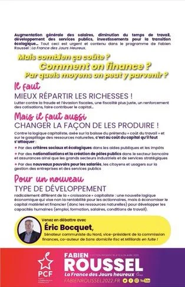

Publication d’archives
Quels moyens pour les Jours Heureux du XXI ème siècle ?
Date indiquée par Facebook · 15 mars 2022
Texte conservé avec la publication
Contexte du dossier
Le 14 mars, trois publications, dont deux volets, annoncent le soutien de plus de 800 salariés de l’énergie à Fabien Roussel. Ce sont les traces d’un même appel, pas trois groupes distincts à additionner. Le débat annoncé à Poitiers le 21 mars avec Éric Bocquet porte sur les moyens financiers des « Jours heureux », en lien avec ses travaux sur l’évasion fiscale.
La déclaration de République et Socialisme, signée Patrice Siard et publiée le 16 mars, motive son soutien par la République sociale : services publics, droit du travail, laïcité, industrie et indépendance. Le billet mentionne d’autres organisations et personnalités ralliées au candidat. En fin de mois, les soutiens de députés communistes honoraires, de Carine Picard-Nilès et d’Odette Nilès prolongent la campagne. Rassembler ne signifie pas effacer la candidature : c’est autour d’un programme identifié que ces appuis sont alors présentés.

Sources
Archive rouge · export Facebook · AR-0002-FB-01928
À lire aussi · Septembre 2022 : le débat public ne se décrète pas d’en haut